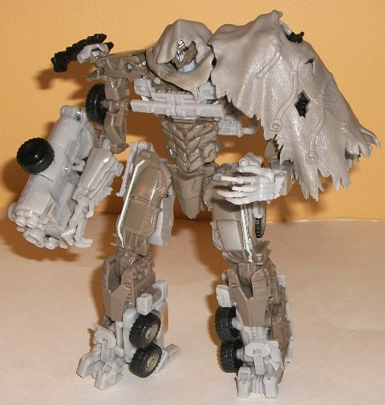
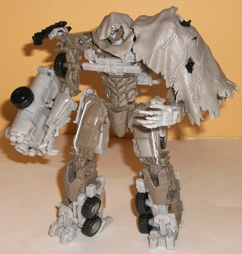

Megatron
(Voyager; DotM)
Megatron
(Voyager; DotM)
 

Megatron's vehicle mode
THIS time around is actually the first realistic one he's had for a movie--
it's a rather run-down, rusty-looking old MACK truck. This rather fits
him for the third movie, considering how... well... "deteriorated" he is
this time. In vehicle mode, the proportions are pretty darn good, and there's
no real robot extras unless you take off the rubbery "tarp" piece on the
back end-- and even then, it's just his feet, which aren't at all as obvious
as you'd think. I DO wish that his tarp piece actually connected to something
in this mode, though-- you just sorta place it on his back half, which
means if you it turn on one side or wiggle him around a fair amount, it'll
fall off. The mold detailing on this toy-- as with most movieverse toys--
is quite impressive, with the grill and front-sides of the vehicle being
particularly impressive in just how much
stuff
there's detailed
in there. Megatron's color scheme is incredibly dull, but it's sorta
meant
to be here, moreso than in his other Movieverse incarnations-- again, because
of his "seen-better-days" personality for the movie. The light gray, black,
and moderately dark brownish tan are hardly colors that catch the eye,
though the shade of transparent plastic used to make his windows look rusty
is a pretty unique color, so I'll give them that much. The paint apps are
sparse, however,-- the rusty paint apps around the top of his wheels are
really his only substantial paint apps here, which is WAY too few.
Given that he has a
"real" alt mode, this time around Megatron's robot mode looks like much
more than a metaliic sci-fi monster that doesn't seem like it could transform.
The truck grille pieces are in a nice slightly split pattern on the chest,
while the shoulders are mostly made of the front parts of the vehicle,
along with the truck roof on his back and some of his wheels on the sides
of his feet. There's still some call-back to his previous movie incarnations,
though, such as his spindly hands, the shape of his abdomen, and his face
sculpt (and speaking of said face sculpt, it's INCREDIBLY well-done, with
the light piping looking very cool coming through the damaged half of his
face). His shoulders are a bit TOO spindly proportionally, but otherwise
his proportions are pretty darned great-- it's particularly impressive
how well his legs are designed. What's quite unique about this version
of Megatron is that he comes with the "cloak" that he wore in many scenes
of the movie, made up of the tarp from his vehicle mode. Here, a hood folds
out from underneath the tarp and pegs in moderately well around his head
to give him a pretty cool "old hideous warrior" look-- though if you think
it looks goofy for TFs to wear any kind of "clothes", you can easily take
it off. The cloak also disguises one of his skinny shoulders as well, so
that's always good. Unfortunately, just like in vehicle mode, Megatron
is almost entirely bereft of paint apps here-- there's a few on his hips
and face, but that's it, which is a real shame. As for his Mechtech weapon,
pressing forward on the ladder piece on tha tank that you hook onto his
arm allows it to extend to form a more cannon-looking fusion cannon-- which
makes it a real bummer that it can't stay in that configuration, but then
again that's par for the course when it comes to the gimmick. When it comes
to articulation, Megatron's got it-- he can move at the neck, shoulders
(at three points), elbows (at two points), wrists, hips (at two points),
knees (at two points), and ankles.
DotM voyager-class Megatron
is the best version of the best incarnation of the Movie-verse Decepticon
leader overall, with an alt mode that's actually quite good and well-proportioned.
The robot mode also oozes personality, particularly with his awesome tarp-cloak,
and he's got pretty good articulation to boot. My only major misgivings
about him are his oddly-proportioned shoulders and near-total lack of paint
apps. Recommended if you like the Movieverse aesthetic.
Review by Beastbot